Военные медики
Вам будут помогать опытные врачи, выпускники Военно-Медицинской Академии, имеющие опыт оказания помощи в военной системе и в гражданском здравоохранении. Мы делаем все, чтобы лечение алкоголизма дало ожидаемый результат.
Серьёзное лечение алкогольных проблем и табакокурения
Курс на трезвость
Более 30 лет помогаем выйти из зависимости. Анонимно, с 1992 года. Запись и выезд на дом круглосуточно.
Наркологическая помощь: лечение алкоголизма, вывод из запоя, кодирование, отказ от курения. Анонимно.
Консультация и анализы в день обращения бесплатно!
Вам будут помогать опытные врачи, выпускники Военно-Медицинской Академии, имеющие опыт оказания помощи в военной системе и в гражданском здравоохранении. Мы делаем все, чтобы лечение алкоголизма дало ожидаемый результат.
Мы не назначаем лишних процедур. Гибкая система скидок при повторном обращении. Дополнительные скидки пациентам из других регионов.
Лечение подбираем индивидуально после осмотра врача. Мы со всей ответственностью относимся к своей работе и делаем все необходимое, чтобы оказать реальную помощь пациенту.
Центр принимает ежедневно с 9:00 до 17:00, запись и выезд врача на дом круглосуточно. Возможны разные формы лечения: амбулаторно и на дому.
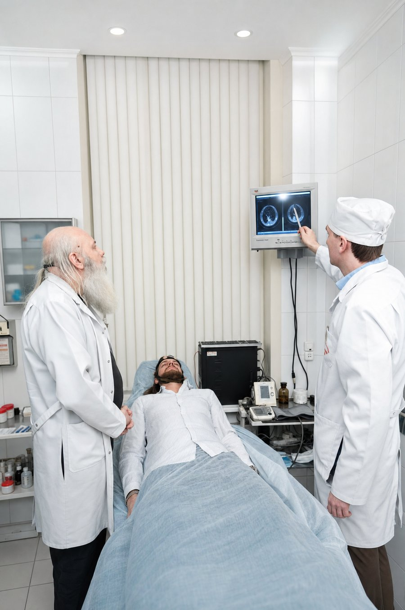
Академический Медицинский Центр создал в 1992 году Олег Владимирович Ганжа. Центр объединяет клиническую практику, образование и исследования.
Под руководством Олега Владимировича центр быстро зарекомендовал себя как одно из ведущих медицинских учреждений страны: передовые методы диагностики и лечения, участие в научных исследованиях и разработке новых медицинских технологий.
С 1992 года Академический Медицинский Центр помогает людям выйти из зависимости. Тысячи историй, команда из 29 врачей и один принцип: человека ведёт не один специалист, а вся команда.
История центраОпытные специалисты, выпускники Военно-Медицинской Академии
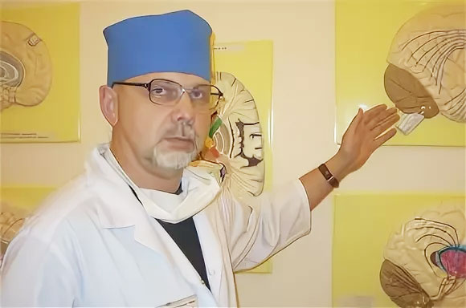
Направления: лечение алкоголизма и коморбидных психических расстройств, симптомоцентрированная, личностноцентрированная и социоцентрированная психотерапия.
Биография Олега Владимировича Ганжи
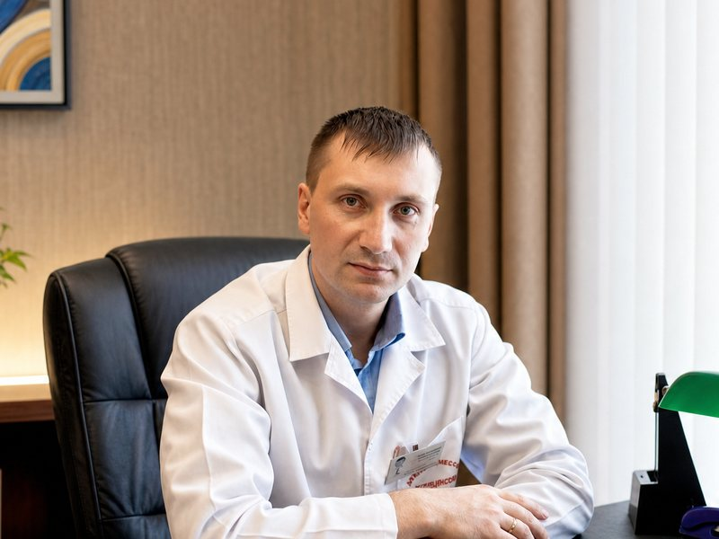
Направления: интегративная психотерапия, гештальт-психотерапия, позитивная психотерапия, психосинтез у больных алкоголизмом.
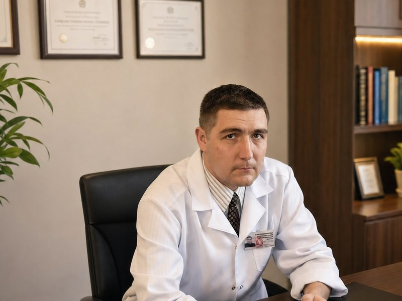
Направления: неврологические и терапевтические расстройства у больных алкоголизмом.
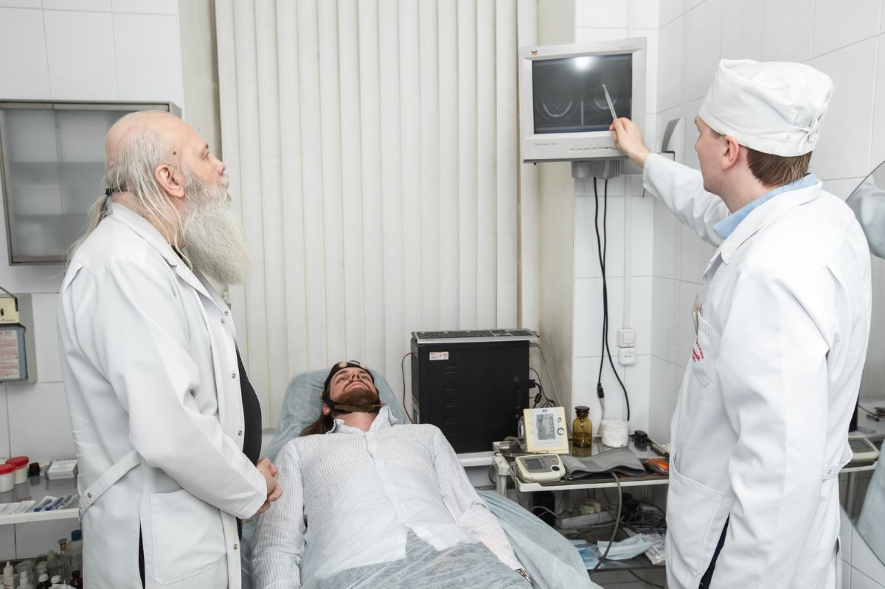
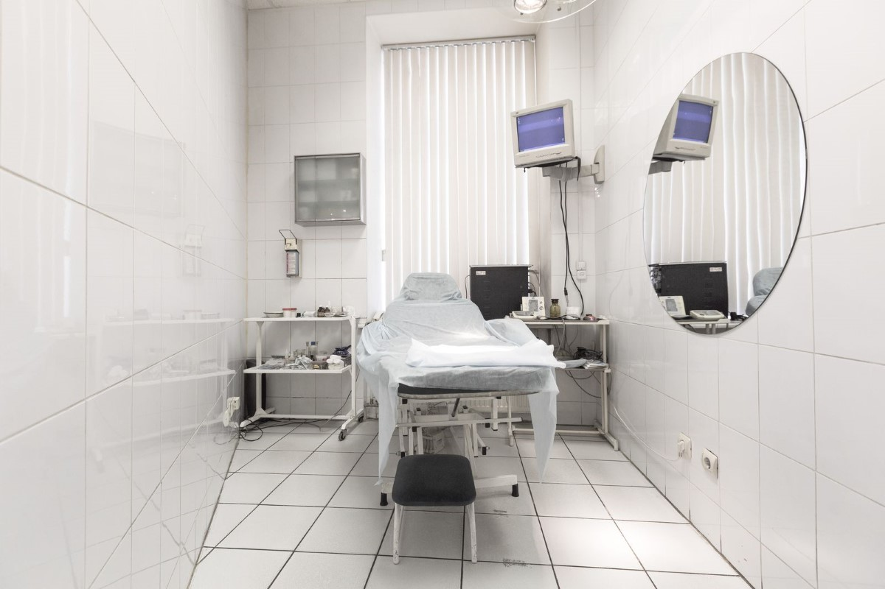
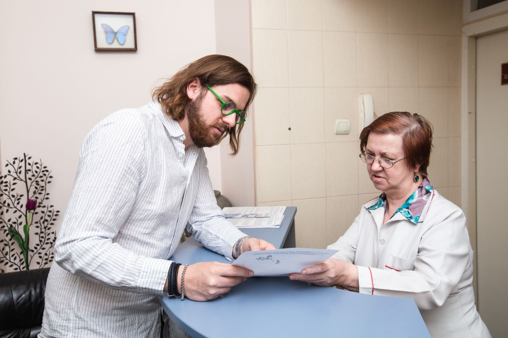
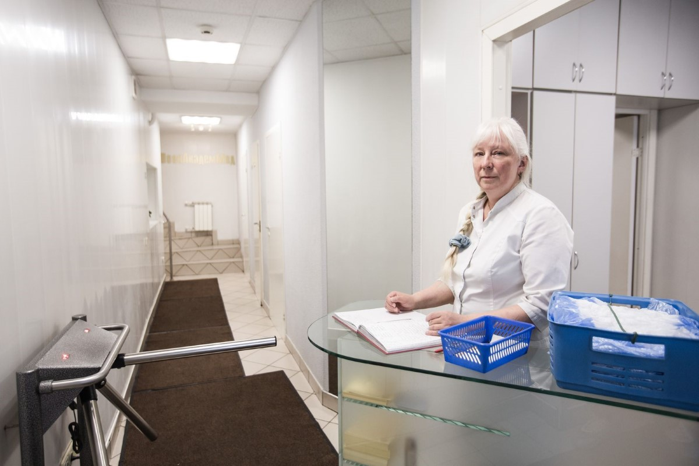
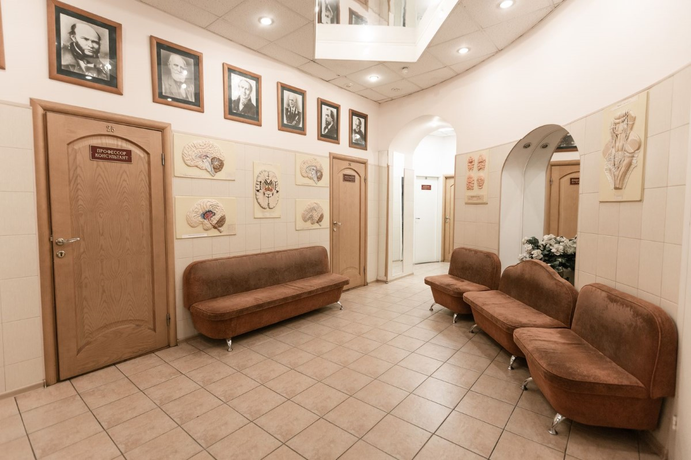
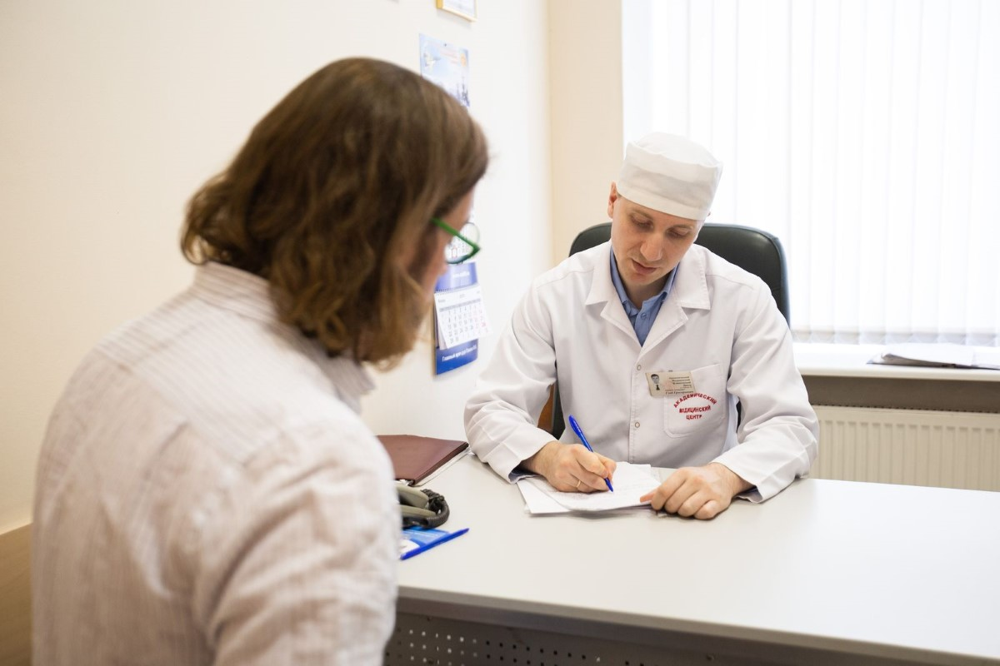
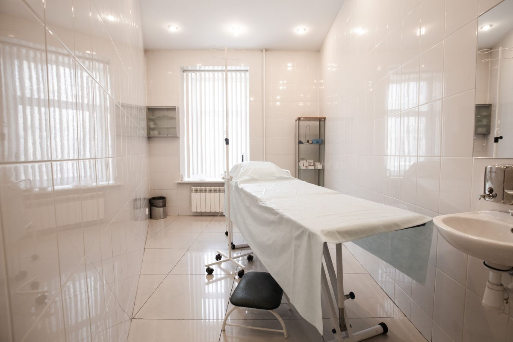
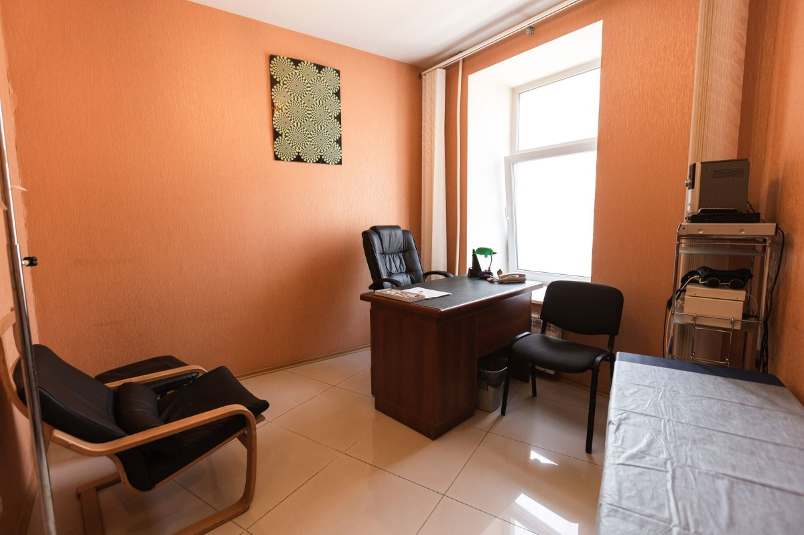
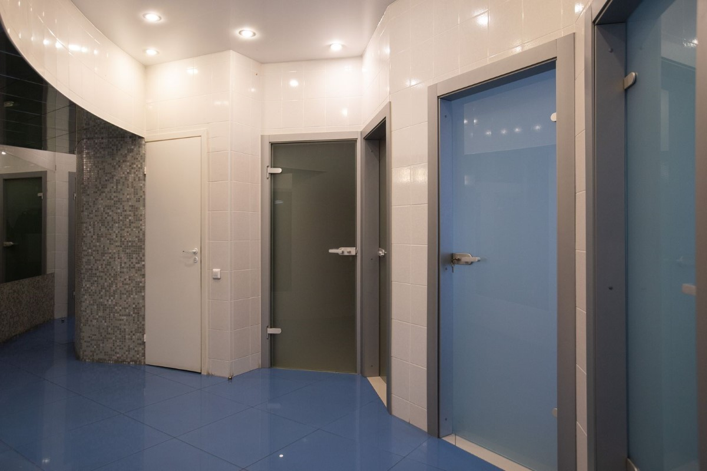
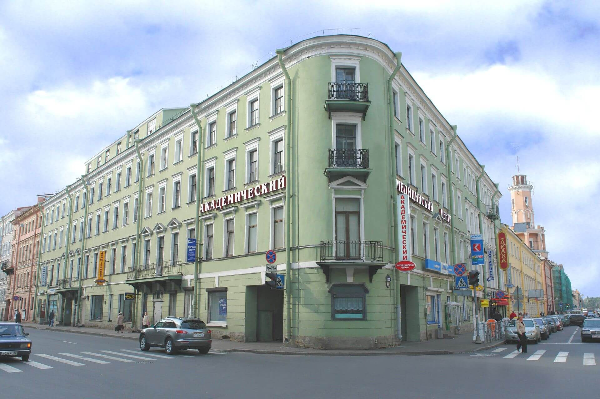
Реальные истории наших пациентов
Лечение прошло успешно, не скажу, что было очень легко, но обстановка и специалисты мне очень помогли. Отдельное спасибо Олегу Владимировичу, который направлял меня и поддерживал. На сегодняшний день я не пью уже 11 лет и не представляю, как мог вообще пить алкоголь. Спасибо, что спасаете людей.
Я лечилась от алкоголизма в 2016 году. Очень благодарна всем за помощь. Вы спасли нам жизнь, как хорошо жить и не употреблять алкоголь. Вы спасли мою семью. Я желаю всем здоровья, счастья, удачи!
Лечился в феврале прошлого года от алкоголя. Были запои, агрессия, нервные срывы. Думал, что сам могу справиться, но после двух попыток бросить каждый раз напивался и не мог остановиться неделями. В центр меня привела жена. Большое спасибо врачам, которые дали мне второй шанс на новую жизнь без зависимости. Прошел всего год, но у меня чувство, будто я помолодел лет на 20.
Моя мама лечилась от алкогольной зависимости в 2007 году. Прошло 13 лет, и она сорвалась. Приехали на лечение, надеемся на хороший результат, так как предыдущий курс ей очень помог.
В стоимость входят консультация врачей-специалистов, обследование и подбор метода
В день обращения консультация врача и анализы ничего не стоят. Врач осмотрит, назначит обследование и подберёт метод лечения.
Если вы уже лечились у нас, следующий курс обойдётся дешевле. Размер скидки уточняйте по телефону.
Приезжаете на лечение из другого города? Скажите об этом при звонке. Размер скидки уточняйте по телефону.
Оперативная помощь специалистов в центре, круглосуточно.
Современные препараты и методики, подбор индивидуальной программы.
Выезд врача по любому адресу Санкт-Петербурга и Ленинградской области.
Как проходит, что входит в цену, что подготовить и когда звонить в скорую.

Врач центра приедет домой в Санкт-Петербурге или Ленинградской области, снимет отравление и объяснит, как пережить следующие дни. Позвонить можно в любое время суток.
от 10 000 руб.
Нарколог центра приедет к пациенту домой в Санкт-Петербурге или Ленинградской области, осмотрит его и решит, как помочь. Вызвать врача может сам человек или его близкие, по телефону в любое время.
от 10 000 руб.
Врач центра поставит капельницу на дому в Санкт-Петербурге или Ленинградской области, подобрав состав после осмотра. Вызвать его можно по телефону круглосуточно.
от 10 000 руб.
Все методы кодирования от алкоголя в Академическом Медицинском Центре на Садовой улице: препараты и психотерапия, сроки и цены. Начать можно с бесплатной консультации врача, позвоните (812) 314-44-82, круглосуточно.
от 5 000 руб.
Препараты дисульфирама в вену, под кожу или в виде геля в Академическом Медицинском Центре на Садовой улице. Сначала бесплатная консультация и анализы, позвоните (812) 314-44-82, круглосуточно и анонимно.
от 5 000 руб.
Психотерапевтические методы кодирования от алкоголя, без препаратов. Сеанс проводит врач-психотерапевт Академического Медицинского Центра на Садовой улице, позвоните (812) 314-44-82, круглосуточно и анонимно.
от 11 900 руб.
Нарколог Академического Медицинского Центра на Садовой улице проконсультирует анонимно: в центре ежедневно с 9:00 до 17:00, запись по телефону круглосуточно. До 31 декабря 2026 года консультация врача и анализы в день обращения бесплатны, позвоните (812) 314-44-82.

Врачи центра выезжают по любому адресу Санкт-Петербурга и Ленинградской области днём и ночью, без выходных. Вызвать нарколога можно одним звонком.
от 10 000 руб. Алкоголизм
АлкоголизмТри стадии алкоголизма и их признаки, короткий тест из четырёх вопросов и чем бытовое пьянство отличается от зависимости. Когда идти к наркологу, анонимно, в Санкт-Петербурге.
 Близким
БлизкимКак начать разговор с пьющим близким, когда это делать и чего избегать. Почему нельзя подмешивать препараты без ведома и что закон говорит о принудительном лечении.
 Запой
ЗапойЧем похмелье отличается от абстинентного синдрома после запоя, что реально помогает дома, чего делать нельзя и при каких признаках звонить врачу или 103.
 Кодирование
КодированиеСколько дней не пить перед кодированием, зачем нужны анализы, что рассказать врачу и кому кодирование противопоказано. Консультация и анализы в день обращения бесплатно.
 Кодирование
КодированиеПочему случается срыв после кодирования от алкоголя, что делать сразу, если действует дисульфирам, как говорить с врачом, выбрать метод заново и как поддержать близкого.
 Близким
БлизкимЧто такое созависимость, когда близкий пьёт: признаки, почему спасение продлевает выпивку, как ставить границы, где искать поддержку и как защитить детей. Советы для родных.
Наши врачи более 10 лет помогают пациентам, которые не могут самостоятельно отказаться от сигарет, вейпов и кальянов. Более 2000 человек уже не курят. Консультация и анализы в день обращения бесплатно.
Звоните круглосуточно: диспетчер запишет в центр или отправит врача на дом. Анонимно, ничего заполнять и оставлять данные о себе не нужно.
(812) 314-44-82